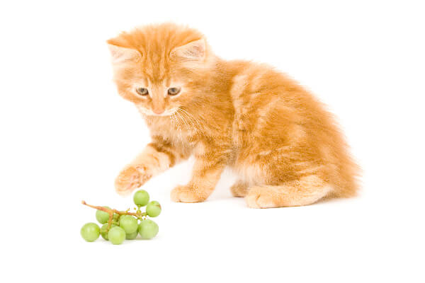
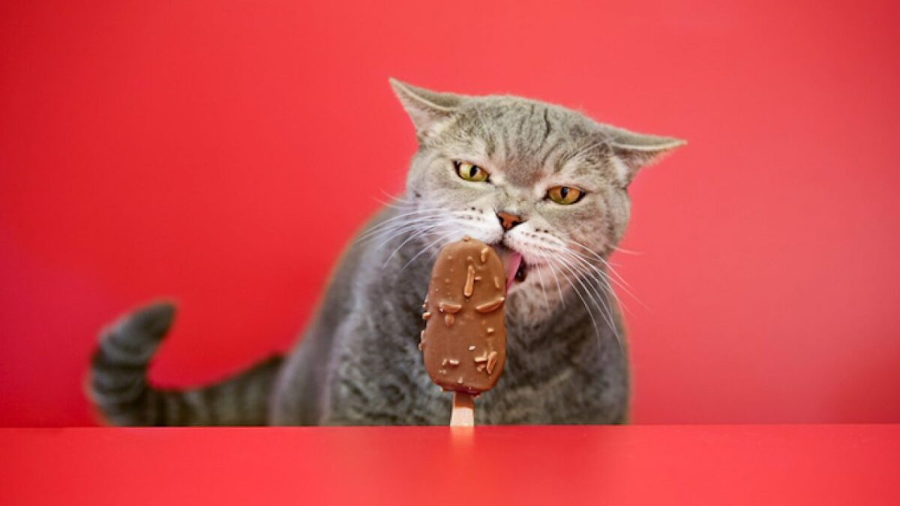
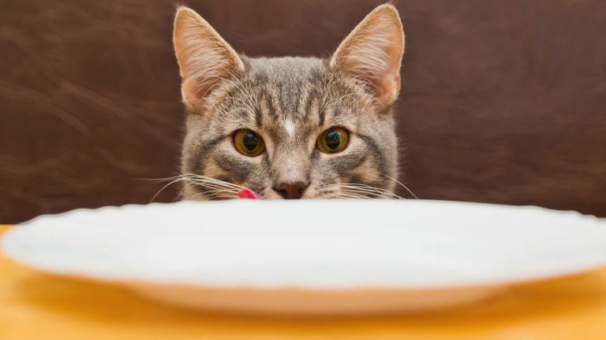
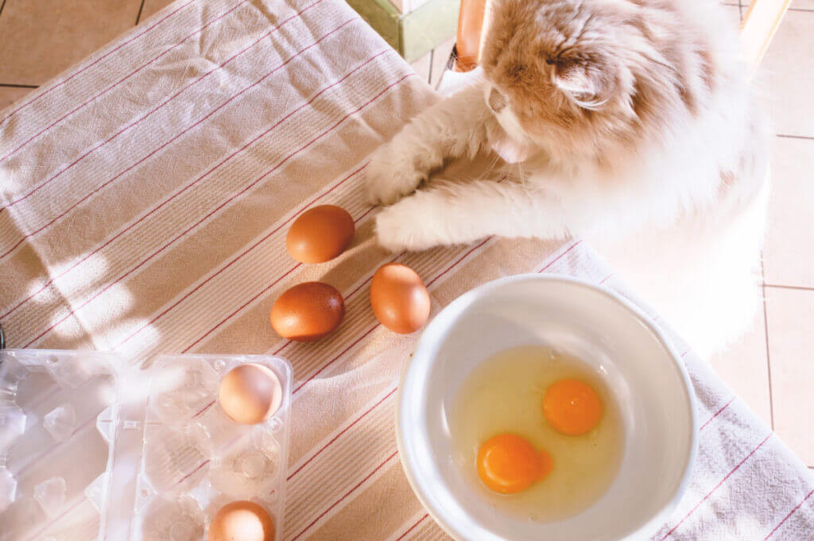
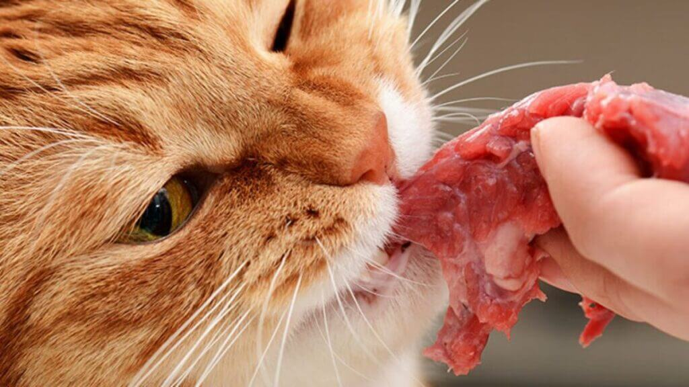
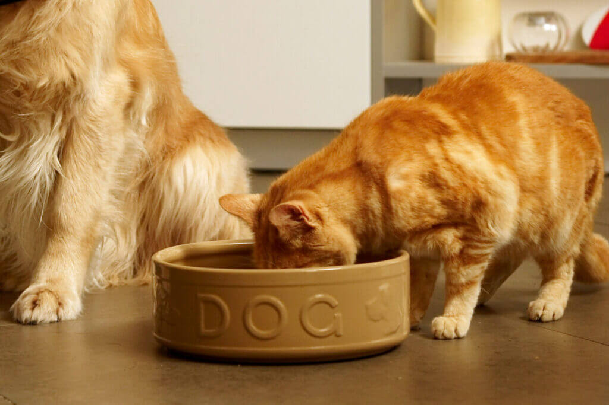
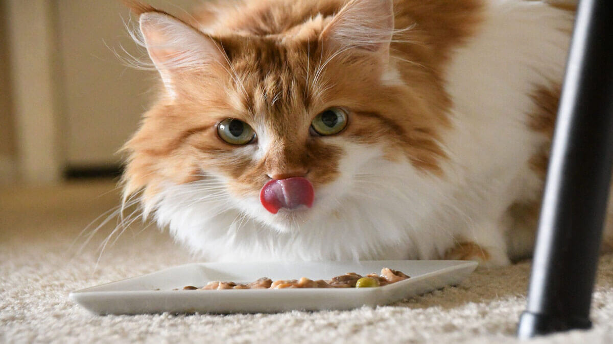

حتماً دیدید که گربهها چقدر توی انتخاب غذاشون وسواسی هستن. با بو کردن یه تیکه گوشت نسبتاً کهنه از کنارش میگذرن یا خیلی راحت به سینهی کبابی که ما با بهبه و چهجه میخوریم دست رد میزنن. این مدل رفتار گربهها باعث شده که خیلیهامون فکر میکنیم گربهها خودشون تشخیص میدن چی براشون خوبه و چی نیست؛ اما واقعیتش اینه که اینطوری نیست.
خیالت راحت، ما این راهو بلدیم و توی این مطلب پت پرس میخوایم با حرف زدن در مورد غذاهای مضر و ممنوعه برای گربه ها کمی سوپرایزتون کنیم؛ چون خیلی از غذاهایی که تو هر خونهای پیدا میشه برای گربهها سمی و خطرناکه! تا آخر مطلب همراهمون باشید؛ اونجا چند نوع از سبزیجات و میوههای بیخطر برای گربهها رو هم معرفی میکنیم.
رژیم غذایی مناسب گربه
همونطور که رژیم غذایی مناسب به سلامت ما آدما کمک میکنه، لازمه گربهها هم تغذیه سالم و کاملی داشته باشن تا عمر طولانی داشته باشن و دچار بسیاری از بیماریها نشن همونطور که میدونید رژیم غذایی گربه با توجه به سنش تغییر میکنه و لازمه که در سنی غذای مناسب و باکیفیتی بخوره.
برای انتخاب رژیم غذایی گربه دو راه دارین:
- خرید غذای خشک گربه و غذای کنسروی
- غذای خانگی گربه
اگه تصمیم گرفتین غذای خشک به گربهتون بدین حتما از برندهای معتبر خرید کنید و هیچ وقت ارزونی رو فدای کیفیت نکنین. چون غذای ارزان گربه در دراز مدت آسیبهای زیادی به گوارش و کلیه و سلامت گربه میزنه.
اما اگه میخواین برای گربهتون آشپزی کنید باید حواستون باشه که ترکیبات غذا باید بالانس شده باشه و مقدار و ترکیبات غذا دقیقا براساس نیازهای تغذیهای گربه شما باشه. در غیر این صورت، غذایی که بهش میدین نه تنها براش مفید نیست، بلکه میتونه باعث مشکلاتی مثل سوءتغذیه، چاقی و … هم بشه.
بالانس کردن ترکیبات غذا کار تخصصی و علمیه و باید حتما توسط دامپزشک انجام بشه. برای اینکار میتونید از سرویس برنامه غذایی پت پرس استفاده کنید. روش کار اینطوریه که شما اطلاعات گربهتون مثل سن، وزن، جنسیت، میزان فعالیت و وضعیت سلامت و … رو به دامپزشک میدین و بعد برنامه غذایی اختصاصی گربهتون رو دریافت میکنید.
این رژیم غذایی اختصاصا برای گربه شما تهیه شده و اگه دقیقا براساس اون عمل کنید کاملترین، بهترین و خوشمزهترین غذا برای گربه ملوس و نازتونه.
دوست داری از تیم تغذیه پت پرس برای گربه ات برنامه غذایی خونگی بگیری؟
لیست غذاهای مضر و ممنوعه برای گربه
غذاهای زیادی وجود داره که گربهها بهش حساسیت دارن و ممکنه بهش واکنش شدیدی نشون بدن. ما توی این بخش مهمترین و البته خطرناک ترین غذاها و خوراکیها رو معرفی میکنیم. حتی اگه گربهتون این غذاها رو دوست داشت، لطفا بهش ندید.

سیر و پیازچه و پیاز برای گربه ضرر دارد؟
پیاز از هر نوعش، پودر شده، سرخ شده، آبپز و … برای گربهها خیلی مضره. پیاز باعث شکسته شدن گلبولهای قرمز خون گربه میشه و مصرف دراز مدتش باعث کمخونی گربه میشه. سیر و پیازچه تا ۵ برابر از پیاز قویتر هستن. مصرف اونها باعث مشکلات جدی توی سلامتی گربهتون میشه. مصرف مقدار کمی پیاز برای گربه یا یه حبه سیر ممکنه باعث دل درد گربه بشه اما لازم نیست به خاطرش به دامپزشک مراجعه کنید.
شیر و سایر لبنیات
سیستم گوارشی بیشتر گربهها در برابر لاکتوز موجود توی شیر و لبنیات حساسه. مصرف لبنیات باعث اذیت شدن معده و اسهال گربه میشه. همونطور که در مقاله اسهال گربه هم گفتیم؛ شیر (به خصوص شیر گاو) یکی از دلایل اصلی بروز اسهال در گربه هاست. به همین دلیل جزو غذاهای ممنوعه و مضر برای سلامت گربهها به شمار میرود. البته پت پرس، توی مقاله شیر برای گربه به طور کامل توضیح داده که چه نوع شیری میتونه برای گربه مفید و چه نوعی برای اون مضره، پس پیشنهاد میکنم اون مقاله رو هم مطالعه کنین.
آیا ماست برای گربه ضرر دارد؟
اغلب گربهها عاشق ماست هستند. به گفته thesprucepets میزان لاکتوز موجود در ماست با شیر متفاوته. برای همینه که ماست برای گربه ها راحتتر هضم میشه. شما میتونین از ماست پروبیوتیک برای هضم بهتر استفاده کنین. اما میزان اون رو با مشورت دامپزشکتون تو برنامه غذاییاش جا بدین.
حدوداً ۳-۴ قاشق در هفته ماست برای گربه ضرری نداره.
آیا پنیر برای گربه ضرر دارد؟
اضافه کردن پنیر برای گربه و برنامه غذاییاش همون حالت ماست رو داره. کلاً این دو لاکتوز سبکتری نسبت به شیر دارند. از پنیرهای پروبیوتیک انسانی میتونین به گربهها بدین. ولی دقت کنین که هر کدوم این موارد میتونین در ازای مصرف زیاد تبدیل به غذاهای مضر برای گربه بشن.
ضرر کشک برای گربه تو چیه؟
ساختار تولید کشک با لبنیات دیگه فرق داره و میزان نمک، پروتئین و اسیدهای آمینه و نگهدارندههای اون خیلی زیاده. گذاشتن کشک برای گربه اصلاً پیشنهاد نمیشه. چون میتونه به سیستم گوارش و کلیهاش آسیب برسونه.
کشمش و انگور برای گربه
انگور و کشمش جزء مواد غذایی مضر برای گربه هستن و باعث نارسایی و نقص عملکرد کلیه در گربهها میشن. علت این موضوع هنوز دقیق مشخص نیست اما به دلایلی انگور و کشمش باعث ایجاد مشکلات کلیوی توی گربهها میشن.
بیشفعالی و استفراغ از نشونههای اولیهی مشکلزا بودن این مواد برای گربهتون هست. هرچند ممکنه که گربهی شما هیچ علائمی نداشته باشه اما به هر حال بهتره که این مواد رو از دسترس گربهتون دور نگه دارین.

الکل
مصرف هر مادهای که حاوی الکل باشه باعث مشکلات جدی توی گربهها میشه. الکل روی مغز و کبد گربه همون تاثیر مخربی که روی بدن ما انسانها داره رو میذاره. با این تفاوت که بدن گربه با مقدار خیلی کمی الکل دچار مسمومیت و مشکلات جدی میشه.
مصرف ۲ قاشق ویسکی باعث به کما رفتن یه گربهی ۲.۵ کیلوگرمی میشه و سومین قاشق میتونه باعث مرگش بشه. پس خیلی مراقب باشید.
آیا تن ماهی برای گربه خوب است؟
خیلی عجیبه اگه بهتون بگن تن ماهی رو نباید به گربه بدید نه؟ ماهی تن سرشار از پروتئین و امگا ۳ هست اما غذای کاملی برای گربهها نیست. مقدار کمی تن ماهی، به عنوان تشویقی گربه هیچ اشکالی نداره؛ اما گربهها میتونن به تن ماهی معتاد بشن! خیلی هم براشون تفاوتی نداره که تن ماهی مخصوص گربه هست یا مخصوص ما آدمها.
اما واقعیتش اینه که رژیم غذایی که بر پایهی تن ماهی باشه، اصلاً برای گربه خوب نیست و باعث سوء تغذیه میشه. اگه برای مدت زمان طولانی به گربه تن ماهی بدید ممکنه دچار مسمویت جیوهای هم بشه. بنابراین در مصرف ماهی به گربه احتیاط کنید.
یادتون باشه بعضی از گربهها به تن ماهی حساسیت دارن. اگه تازه صاحب گربهتون شدید و از آلرژی داشتن یا نداشتنش بیخبرید، بهش مقدار کمی کنسرو تن ماهی بدید. کمی صبر کنید. اگه علائمی مثل تورم، سرفه، عطسه، خارش و … رو نداشت میتونید بهش تن ماهی رو بدید. اگه اطلاعات بیشتری در مورد معایب خوردن تن ماهی برای گربه میخواین بدونین، پیشنهاد میکنیم حتما یه سر به مقاله تن ماهی برای گربه بزنین.

کافئین
قهوه و نوشیدنیهای حاوی کافئین جزء غذاهای مضر برای گربه هستن و نباید اصلا به گربه داده بشه. مقدار قابل توجهی کافئین میتونه باعث مرگ یه گربه بشه.
کافئین علاوه بر چای و قهوه، توی بعضی حبوبات، شکلات و کاکائو، نوشابه، نوشیدنیهای انرژیزا و بعضی از قرصها و داروها (معمولاً مُسکنها) پیدا میشه. شکر هیچ ارزش غذایی نداره که لازم باشه به رژیم غذایی گربهتون اضافهاش کنید. بعضی از محصولات کم کیفیت، شکر رو به فرمول غذای گربه اضافه میکنن تا طعمش رو برای گربه جذابتر کنن؛ پس یادتون باشه شکر خوراکی جزء مواد غذایی ممنوعه برای گربه است. نوع خاصی از شیرین کننده به اسم زایلیتول که توی آدامس و آبنبات و … ازش استفاده میشه،برای گربهها سمی هست و باعث افتادن قند خون اونها میشه. ضعف، تشنج و استفراغ از علائم دیگهی مسمویت با زایلیتول هست. گربهها میتونن خرما بخورن اما این نباید جزو ثابتی از برنامه غذاییشون بشه. خرما برای گربه وقتی جزو غذاهای مضر به حساب میاد که بیش از حد مصرف بشه. چون اون قند طبیعی زیادی داره. پس اگه شما از خرما برای گربه خودتون استفاده میکنین حواستون به تعادل وزن و تغییراتش باشه.
معمولاً گربهها علاقهای به خوردن شکلات ندارن و کم پیش میاد که خودشون برای خوردنش پیش قدم بشن؛ توی بیشتر مواقع صاحب گربه یا افراد دیگهای گربه رو به خوردنش تشویق میکنن. شاید علتش اینه که فکر میکنن شکلات نوعی تشویقی به حساب میاد اما خبر بد اینه که اینطور نیست. شکلات علاوه بر کافئین، دارای مادهای به اسم تئوبرومین هست و جزء غذاهای خطرناک برای گربه محسوب میشه. تئوبرومین ساختاری شبیه به کافئین داره و اثرات محرک، نشاطآور روی گربه میذاره. این ماده توی تمام انواع شکلات، حتی شکلات سفید هم پیدا میشه؛ اما خطرناکترین نوع شکلات برای گربهها، شکلات تلخه. خوردن شکلات میتونه باعث مشکلاتی مثل بهم خوردن ریتم ضربان قلب، لرزش عضلات، تشنج و حتی مرگ گربه بشه. مختصر و مفیدش میشود که بله اما خب باید چند تا نکته رو راجعبه بستنی برای گربه بدونین. اگه اونا یه لیس به بستنی شما بزنن، مشکلی نداره. البته به شرطی که این بستنی وانیلی باشه. بستنیهای شکلاتی همه جوره جزو غذاهای مضر برای گربه به حساب میان حتی در حد یه لیس!
بنابراین بهتون پیشنهاد میکنیم از بستنی مخصوص برای گربه استفاده کنین. بستنی گربه با طعمهای مختلف تو بازار موجوده و میتونین براش بخرین. این بستنی برای گربه تولید شده و ترکیبات اون بالانس شده و مخصوص خود گربههاست.  خیلی از صاحبای گربه از ما میپرسن: ایا نمک برای گربه ضرر دارد؟ باید بدونید لیست غذای ممنوعه برای گربه ها شامل مواد غذایی که نمک زیادی دارن هم میشه. مصرف بیش از حد نمک برای گربه باعث تشکیل رسوب توی کلیههای گربه میشه. علاوه بر این فشار خون بالا هم میتونه یکی از اثرات مخرب نمک روی بدن گربه باشه. بنابراین از دادن غذاهای شور به گربهتون جدا خودداری کنید. دادن سوسیس به گربه اصلاً پیشنهاد نمیشه حتی در مقدار کم. سوسیس و کالباس نمک زیاد و برخی سولفیتها و نیتراتهای نگهدارنده دارن که مثل سم برای گربه عمل میکنن. هیچ سوسیس و کالباس برای گربهها خوب نیست. این دو جزو غذاهای مضر برای گربه به حساب میان. چون مقدار خیلی زیادی چربی ترانس شده توشون وجود داره. همین باعث میشه که حتی برای ما انسانها هم ضرر داشته باشن. البته اگه گربه شما سوسیس خورده، نگران نباشین. چک کنین و ببینین چه مقداری بوده. یکم از سوسیس برای گربه ضرری نداره اما ممکنه سیستم گوارشیاش رو بهم بریزه. اگه دنبال دادن سوسیس به گربه تون هستین باید خودتون اون رو درست کنین اونم از ترکیبات مفید برای گربه. برای این کار از دامپزشکتون راهنمایی بگیرین. درضمن اون رو باید آبپز یا بخارپز کرده باشین و پخته بهش بدین. معمولاً گربههایی که درست تربیت نشدن، موقع غذا خوردن صاحبشون دوست دارن از غذای صاحبشون هم امتحان کنن. چشمهای مظلومشون رو میدوزن به دهن هرکسی که مشغول غذا خوردنه و تا یه لقمه ازش نگیرن ول کن نیستن. توی این شرایط معمولاً چیزی که نصیب گربه میشه، چربی جدا شده از گوشت یا استخوان باقیمونده از غذا هست. نه چربی و نه استخوان برای سلامتی گربه خوب نیستن و جزء غذاهای مضر برای گربه هستن. چربی چه پخته شده و چه خام، باعث تحریک رودهی گربه میشه. نتیجهی تحریک شدن روده هم استفراغ و اسهاله. استخوان هم ممکنه توی گلوی گربه گیر کنه و یا گوشههای تیزش باعث پاره شدن اعضای داخلی بدن گربه بشه.  تخم مرغ برای گربه به صورت آب پز مشکلی براش ایجاد نمیکنه اما به صورت خام قضیه فرق داره و در واقع به طور کلی هر نوع غذای خام ریسک مبتلا شدن گربه به بیماریهای باکتریایی رو افزایش میده و جزء خطرناک ترین غذاها برای گربه هستن. یکی از این بیماریها سالمونلا هست که یه بیماری عفونیه و میتونه از گربهتون به شما هم سرایت کنه. از علائم سالمونلا میشه به موارد زیر اشاره کرد.  مورد دیگهای که دادن تخم مرغ خام به گربه داره اینه که تخم مرغ مادهای به اسم آویدین داره. آویدین مانع جذب ویتامین B در بدن گربه میشه. ویتامین B برای سلامت پوست و موی گربه لازمه و کمبودش باعث مشکلات پوستی میشه. همونطوری که گفتیم گوشت خام ممکنه باعث انتقال یه سری باکتری به بدن گربه بشه و براش مشکلات جدی مثل سالمونلا و ایکولای ایجاد کنه. علاوه بر این گوشت ماهی آنزیمی داره که مانع جذب تیامین به بدن گربه میشه. نرسیدن تیامین به بدن گربه برای یه مدت طولانی باعث ایجاد مشکلاتی توی سیستم عصبی بدنش میشه. در شرایط وخیم گربه ممکنه به کما بره. گوشت ماهی خام برای گربه میتونه مشکلات عصبی شدیدی ایجاد کنه. شما میتونین به گربهتون سیرابی بدین. چون تقریباً میشه گفت سیرابی برای گربه حکم همون گوشت رو داره. ولی باید حواستون باشه که در کنار گوشت قرمز، مرغ و ماهی برای گربه استفاده بشه و تبدیل به غذای غالب نشه.
خیر. اتفاقاً میگو برای گربه یکی از دوستداشتنیترین غذاهاست. حتی این مورد رو میتونین ه صورت خام هم به گربه بدین و براش ضرری نداره. البته میگوی خام برای گربه باید گهگاه استفاده بشه نه به صورت همیشگی. فقط دقت کنین که موقع دادن میگو به گربه باید اون رو تمیز کرده باشین. نیازی به از بین بردن دست و دمش نیست. گربهها اون رو میخورن. فقط باید داخلش رو تمیز کنین. چیپس میگو برای گربه هم مثل چیپس سیرابی موجوده و میتونین براشون بخرید. حواستون باشه چیپس میگوی انسانی به گربهها ندین چون اونا فرآوری شده و پر از ادویه و چاشنی و نگهدارندهاند. بنابراین جزو غذاهای مضر برای گربه به حساب میان.  اسیدی که توی لیمو و سرکه هست باعث اذیت شدن معدهی گربه میشه. توی موارد با حساسیت بالا میتونه باعث استفراغ و مسمویت غذایی هم بشه. اگه شما توی خونه هم از گربه نگهداری میکنید و هم از سگ، اگه تحت شرایط خاص مجبور شدید یکبار از غذای سگتون به گربهتون هم بدید مشکلی پیش نمیاد. اما یادتون باشه نیازهای غذایی سگ و گربه متفاوتن. غذاهای سگ و گربه هم براساس همین نیازها تهیه میشن. تغذیهی گربهتون در درازمدت با غذای سگ، باعث سوء تغذیهی شدید توی گربه میشه.  مصرف مقدار کمی جگر مرغ برای گربه هیچ مشکلی نداره و جزء غذاهای ممنوعه برای گربه ها نیست. اما میزان زیادی جگر در یک وعده یا مصرفش در دراز مدت باعث یه عالمه مشکل جدی توی گربه میشه. جگر سرشار از ویتامن A هست و زیادی اون باعث مشکلات استخوانی توی گربهتون میشه. توی حالت خیلی شدید، مسمومیت با ویتامین A میتونه به قیمت جون گربه تموم بشه. ما تو یه مقاله دیگه در مورد جگر برای گربه و مسمومیت گربه با جگر مفصل صحبت کردیم و گفتیم خوردن زیاد جگر چه خطراتی میتونه برای گربهها و مخصوصا بچه گربهها داشته باشه. غذاهای تشویقی گربه، نقش خیلی مهمی توی یادگیری و آموزش اونا، تامین ویتامینهای لازم، سلامت دندانها، ایجاد رابطه خوب بین شما و گربه و … دارن. علاوه بر اون تشویقیها خیلی خوشخوراکن و گربهها عاشقشونن. همین خوش خوراک بودن تشویقیها میتونه باعث چاقی بیش از حد گربه بشه. چاقی بیش از حد هم خودش میتونه زمینهساز مشکلاتی مثل دیابت بشه. مورد بعدی در لیست غذاهای ممنوعه برای گربه میوه آووکادو است. آووکادو سرشار از چربیه و بدن گربه نمیتونه چربیها رو به خوبی هضم کنه؛ در نهایت این چربیها باعث مشکلات رودهای توی گربه میشه. بله شما میتونین شلغم به گربهتون بدین ولی به مقدار کم. از شغلم برای گربه هایی که مشکل تیروئید دارن استفاده نکنین. زیتون کلاً خوراکی خطرناکی برای گربه محسوب نمیشه. اما باید کم مصرف بشه. شما میتونین برای استفاده از زیتون برای گربه اون رو حلقه حلقه کنین و یه جا بهش ندین. مثلاً هفتهای یک یا دو زیتون برای گربه تون بذارین. بله. روغن زیتون جزو روغنهای مجاز برای پتها به شمار میاد. اما یادتون باشه هر نوع چربی زیادی برای گربه ضرر داره. پس روغن زیتون وقتی میتونه در رده غذاهای مضر برای گربه قرار بگیره که زیاد مصرف بشه. در میزان کم نه. هیچ اطلاعات دقیقی از مسمویت حیوانات با زعفران در دسترس نیست. ولی همانطور که مصرف زیاد زعفران برای انسان ضرر داره، برای حیوانات هم همینطوره. مواد غذایی چرب دیگه مثل سس، غذاهای سرخ شده و شیرینی و هله هوله هایی مثل پفک، بیسکویت، بستنی ما آدما و پاستیل هم به همین دلیل برای گربه خوب نیستن و جزء غذاهای مضر برای گربه ها به حساب میان. شاید یکی از دمدستیترین غذاهای مضر برای گربه که بهش توجه نداریم همین بیسکویت و نان هستن. معمولاً پیش میاد که گربهها موقع خوردن بیسکویت یا کوکی دنبال ما راه میفتن. حتی موقع غذا خوردن میان سر سفره تا نان بردارن. اغلب پیش میاد که صاحبان گربه یه تیکه از نان و بیسکویت برای گربه بذارن. از بین غذاهای ممنوعه برای گربه باید بیسکوییت و نان رو جدی بگیرین. در مورد نان پایینتر صحبت میکنیم و اینجا به بیسکویت میپردازیم. اگه گهگاهی اندازه یه بند انگشت از بیسکویت و کوکی بخوره، ایرادی نداره. اما این نباید به یه عادت تبدیل بشه. علاوه بر این هرگز از بیسکویت سگ برای گربه استفاده نکنین. اگه بهش ناخونک زد موردی نداره. اما از اون هم جزو غذاهای مضر برای گربه به حساب میاد. چون فرمولاسیون بالانس شدهاش مناسب سگه نه گربه. چون کوکی یا بیسکویت انسانی شیر خشک و شکر و چربی داره بهتره که از مدلهای آماده موجود در بازار برای بیسکویت گربه استفاده کنین تا خیالتون راحت باشه. پس یادتون نره که هربیسکویت انسانی مثل بیسکویت مادر برای گربه ضرر داره! در اصل نمیشه گفت پفک برای گربه ضرر داره. اما معمولاً جزو غذاهای مضر برای گربه دستهبندی میشه. چون پفک برای گربه دارای حجم زیادی از چربی و سدیم بالاست. پس اگه گربهتون موقع پفک خوردن دست از سرتون برنمیداره، میتونین یکم بهش بدین. اما زیاد به این کار عادتش ندین. اگه اهل نون و شیرینی درست کردن توی خونه هستید، حسابی حواستون به خمیرهاتون باشه. همونطوری که میدونید ویژگی خمیر اینه که بعد از گذشت مدت زمان کوتاهی شروع به ور اومدن (افزایش حجم) میکنه. اگه گربهتون خمیر رو بخوره، همین اتفاق توی معدهاش پیش میاد و کلی درد و ناراحتی برای گربه داره. تازه مخمرهایی که برای درست کردن خمیر استفاده کردید، الکل تولید میکنن و ممکنه باعث مسمومیت گربه هم بشه. یه وقت فکر نکنین خود نون هم براش بیخطرهها نه. نان برای گربه هم مضر به حساب میاد چون جوش شیرین و کربوهیدرات و کالری زیاد داره. اگه دوست داشتین از نان برای گربه خودتون استفاده کنین ترجیحاً نان سفید و نان گندم رو به کار ببرین. اون هم به اندازه خیلی خیلی کم. همونطوری که داروهاتون رو دور از دسترس بچهها قرار میدید، گربهتون هم نباید به داروها دسترسی داشته باشه. خوردن قرصی که برای شما تجویز شده میتونه برای گربهتون مرگآور باشه. یادتون باشه هیچ وقت سرخود داروهایی مثل مُسکنها رو به گربهتون ندید. مواردی که بالا گفتیم جزء مواد غذایی مضر برای گربهها هستن که متاسفانه خیلی از صاحبای گربه در موردشون اطلاعی ندارن. اما این معنیش این نیست که به جز اینا دیگه هرچیزی رو میتونید به گربهتون بدین. تو جدول زیر لیست مواد غذایی رو میگیم که اینا هم برای گربهها ممنوع و مضر هستن و اصلا نباید بهشون داده بشن: حالا یه سری غذاها هم هستن که بهترین انتخاب برای گربهها نیستن؛ ولی به اندازه غذاهایی که تا حالا گفتیم هم خطرناک نیستن و در حد کم میتونید به گربهتون بدین. ففط حواستون به کلمه «در حد کم» باشه و هیچ وقت اینا رو هم بیش از حد به گربه ندین تا مشکلی براش پیش نیاد.  برای این که بتونین یه گربه سالم داشته باشین باید همزمان میوه های ممنوعه برای گربه و میوههای بیخطر براش رو بشناسین. این بحث کمی طولانیه و کلی میوه و سبزیجات توی دستهی میوههای بیخطر قرار میگیرن. اما فعلاً این چند نمونه رو به خاطر بسپرید تا مفصل در موردش باهاتون صحبت کنیم. میوههای بیضرر سبزیجات بیضرر اسفناج حاوی انواع ویتامینه و جزو مفیدترین غذاهای گربه است. فقط باید حواستون باشه که اگه گربهتون بیماریهای خاص داره نباید اسفناج بخوره. مثلاً دادن اسفناج به گربه ای که بیماری ادراری داره غلطه. به منظور استفاده از اسفناج برای گربه اون رو بپزید. چون خوردن اسفناج خام میتونه زمینهساز بیماریهای ادراری و سنگ کلیه برای گربه بشه. همچنین اسفناج برای گربه های دچار اضافه وزن هم خیلی مفیده. چون به کاهش وزن کمک میکنه. قطعاً بله! اگه گربه به باغچه سرک بکشه و یکم نعناع رو مزه کنه نه. اما نعناع برای گربه در مقادیر زیاد ضرر داره و منجر به مسمومیت میشه. شما میتونین از لوبیا برای گربه و نخود و عدس استفاده کنین. نکته مهم در دادن حبوبات به گربه اینه که اونا رو خوب بپزین. علاوه بر برخی از حبوبات مثل نخود برای گربه سخت هضم میشن. تو این بین شاید عدس برای گربه سادهتر هضم بشه و احتمال این که تو گلوش بپره و گیر کنه هم کمتره. درسته که حبوبات سرشار از پروتئین هستند اما این مدل از پروتئین بیشتر مناسب بدن انسانه تا گربه. بنابراین بهتره از حبوبات برای گربه به طور مختصر استفاده کنین. به خصوص اگه گربهتون دچار مشکلات گوارشی و هضم و روده تحریکپذیره. از بین حبوبات مناسب برای گربه میتونین نخود سبز پخته رو که معمولاً تو دسته سبزیجات قرار میگیره رو استفاده کنین. نخود فرنگی برای گربه خیلی خوبه و راحتتر هم هضم میشه. سادهترین راه اینه غذاها رو از دسترس گربهتون دور نگه دارید. اگه خواستید از غذاهایی که خودتون مصرف میکنید به گربهتون بدید، یادتون باشه که در حد تشویقی باشه و به یه عادت همیشگی تبدیلش نکنید. همیشه شماره دامپزشکتون رو در درسترس داشته باشید. لازمه که برای شرایط اضطراری شمارهی مرکزی که بتونه به طور شبانه روزی خدمترسانی کنه رو هم داشته باشید. اگه مشکوک شدید که یکی از غذاهای ممنوعه برای گربه ها رو خورده، خونسردی خودتون روحفظ کنید و با دامپزشک تماس بگیرید. برای انتخاب برنامه غذایی مناسب برای گربه باید با غذاهای مفید و مضر برای اونا آشنا بشیم. بعضی از غذاهای ممنوعه برای گربه میتونه باعث مشکلات گوارشی شدیدی و یا حتی مرگشون بشه و مصرف بعضی دیگشون تو بلند مدت میتونه باعث بیماری و مشکل بشه. پس بهتره قبل از دادن غذاهای جدید به گربتون حتما در مورد مفید یا مضر بودنش تحقیقات کافی کرده باشین. شما در مورد غذاهای مضر و ممنوعه برای گربه اطلاعات لازم رو داشتین؟ تاحالا از این غذاها به گربهتون دادید؟ اگر فکر میکنید موردی از لیست ما جا مونده توی بخش نظرات برامون بنویسید تا دوستای دیگهمون هم از اطلاعاتتون استفاده کنن.کافئین توی چه مواد غذایی وجود داره؟

شکر و شیرین کننده مصنوعی زایلیتول
آیا خرما برای گربه ضرر دارد؟
آیا شکلات، تشویقی مناسبی برای گربه است؟
بستنی برای گربه ضرر دارد یا ندارد؟
غذاهای شور مثل سوسیس و فست فود
آیا گربه ها سوسیس می خورند؟
آیا سوسیس برای گربه ها خوب است؟
چربی و استخوانهای زیاد اومده از غذای خودتون
چیکار کنم که گربه موقع غذا خوردنم از غذای من نخواد؟
تخم مرغ خام یکی از غذاهای مضر برای گربه
گوشت ماهی و گوشت قرمز خام
سیرابی برای گربه خوب است؟
آیا میگو برای گربه مضر است؟
لیمو و سرکه
غذای سگ
جگر
یه عالمه تشویقی
آووکادو؛ میوهای مضر برای گربهها
شلغم برای گربه خوبه؟
زیتون برای گربه مجاز به حساب میاد؟
روغن زیتون برای گربه چی؟
آیا استفاده از زعفران برای گربه خطرناکه؟
هله هوله و شیرینی برای گربه ضرر دارد؟

خوردن بیسکویت برای گربه خطرناکه؟
آیا خوردن پفک برای گربه ضرر داره؟
خمیر ور نیومده
داروهای خودتون
لیست تکمیلی مواد غذایی مضر و ممنوع برای گربهها
پفک و چیپس قند و شیرینی فرنی گردو سوسیس و کالباس
زعفران خرما و عسل
نخود باقلا پوست مرغ
بستنی آدما پاستیل ادویه و فلفل خربزه استخوان
لیست مواد غذایی که در حد کم برای گربهها اشکالی نداره!
پنیر و کشک *جگر بادمجان انواع نان آشغال مرغ
اسفناج شیر تن ماهی کره بادام زمینی عدس
سبزیجات و میوه های ممنوعه برای گربه چیا هستن؟
مصرف اسفناج برای گربه مفیده؟
خوردن نعنا برای گربه ضرر دارد؟
مصرف حبوبات برای گربه خوبه یا بد؟
چطور از گربهام در برابر غذاهای ممنوعه محافظت کنم؟
اگه گربهام از غذاهای ممنوعه خورد چیکار کنم؟
جمع بندی


درود…
داداشم برای پیشی های بیرون اسکلت می گیره و آب پز می کنه. چند تا تکه پیاز هم میندازه تو قابلمه. بعد پیازها رو کاملا جدا می کنه و گوشت و استخوان هم جدا می کنه می بره براشون. این مشکلی ایجاد می کنه برای پیشی ها؟
سلام
بله اسکلت مرغ غذای مناسبی نیست و پیاز هم میتونه اون ها رو دچار مشکلات سلامتی کنه حتی اگر بعد از پخت جداش کنید
سلام، گوشت مرغ آب پز و بدون ادویه رو میشه به عنوان میان وعده یکبار در روز یا تشویقی به بچه گربه داد؟ و اینکه چه غذا های خونگی ای هست که آب مورد نیاز بدن گربه رو تامین کنه و مشکلی نداشته باشه که به گربه بدیم؟
میشه داد ولی کافی نیست
بهتره از دامپزشک متخصص تغذیه برنامه غذایی اختصاصی مخصوص گربتون دریافت کنید تا مطمئن بشید همه مواد لازم به بدنش میرسه
من تا الان ۵ تا از غذای این لیست رو به گربه ها دادم اصلا اینا رو میدیدم بهشون تا الان نه تنها مشکلی پیدا نکردن بلکه خیلی طولانی هم عمر می کنن الان یه گربه هست که ۱۳ ساله اینجاست و مریض هم نشده. اما در مورد لبنیات فقط پنیر دو تا گربه رو مریض کرد و یکیشون با رنج مرد. واقعا اون بد بود چون هیچ وقت پنیر نمی دادم. بقیش مشکلی نداشتن
مشکل ممکنه همون لحظه به وجود نیاد و در دراز مدت گریبانگیر حیوون بی گناه بشه. لطفا رعایت کنید
سلام.۳روز پیش توی پارک ی پیشی دو سه ماهه بود یک چشمش عفونت کرده بود و گربه های دیگه کتکش میزدن و خیلی گرسنه بود گویا مادرش رهاش کرده یا مرده. من اوردم خونه قطره سیپلکس و کلرامفنیکل هر ۸ساعت یک قطره ریختم چشمش خوب شد ولی از امروز صبح بیحال بود همش میخوابید. غذا میخوره جیش پی پی میکنه دوباره میخوابه یجوری راه میره انگار رمق نداره. حاات خوابیده بازی میکنه. بخاطر دارو اینجوری شده یعنی؟ غذا هم بهش ماهی و گوشت پخته برنج شیر بدون لاکتوز و سیب زمینی دادم. البته بگم در طول روز غذا همیشه در دسترسشه هرچقدر بخواد میخورو روزی ۵بار ادرار میکنه و سه چهار بار پی پی. خیلی براش ناراحتم لطفا بگید چیکار کنم. اوردم خونه درمانش کنم نه اینکه بدتر باعث مریضیش بشم. روز اول پی پیش خشک بود الان حالت شل داره. البته نه اسهال🤢
با سرویس دامپزشک آنلاین در خدمتتون هستیم برای کمک فرناز زارع عزیز
سلام ببخشید گربه من فکر کنم سوئد تغذیه گرفته نمیتونه خوب راه بره تورو خدا بگید چیکارش کنم نه غذا میخوره نه آب خواهش میکنم بگید چه جوری خوبش کنم
سلام رمیصا جان
بی اشتهایی گربتون علل زیادی میتونه داشته باشه- بیماری- درد- مشکلات مربوط به غذا باشه. پس اول بهتره یه چکاب ببریش و در صورتی که مشکلی نداشت میتونی از ما برنامه غذایی گربه دریافت کنی
سلام گربه ماهی های قرمز عیدو خورده
چیکار کنم ؟
سلام هانا جان
مشکلی ایجاد نمیشه اما از این به بعد یا ماهی قرمز نخرید یا اگه میخرید توی ارتفاع و محلی قرارش بدید تا گربه تون بهش دسترسی نداشته باشه.
شاید ماهی قرمز هم دوست داشت بیشتر عمر کنه !!!
سلام
اگه سیب زمینی سرخ کرده به گربه ام بدم اتفاقی براش پیش میاد؟؟؟
سلام فاطمه جان
کلا سیب زمینی سرخ کرده پر از نمک و روغن هست و اگر گربه شما به این خوراکی عادت کنه مشکلات بدی براش به وجود میاد.
سلام گربه من فک کنم احتمالا از سبزه عید یا گل نرگس هلندى هفت سین خورده و کف بالا میاره ، خودش خوب میشه ؟ چیکار میشه کرد این روزها هم که تعطیله همه جا
سلام سیما جان
سبزه عید مشکلی ندراه اما نرگس هلندی سمیه و به سرعت باید برای درمان پیش دامپزشک برید.